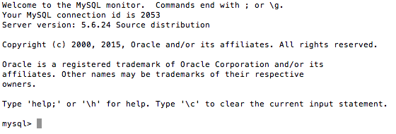
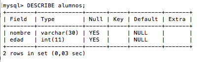
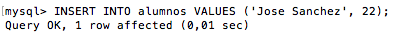
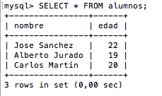

Para poder realizar la conexión de PHP a MySQL se debe primero realizar la creación de la Base de Datos.
Acceder a mysql desde la consola.
Lo primero que tenemos que hacer para poder ejecutar comandos es ejecutar el programa ‘mysql‘ que si ya tenéis instalado en el ordenador o servidor, bastaría con ejecutar desde la consola el siguiente comando:
$mysql -u usuario -p
Es posible que no tengáis contraseña si estáis utilizando algún paquete como XAMPP o similar. En ese caso bastaría con poner el siguiente comando:
$mysql -u root
Si al ejecutar el comando mysql te un error de que no encuentra el programa, tendrás que ejecutarlo directamente en la ruta en la que está ubicado o añadir esa ruta para que podamos ejecutarlo desde cualquier directorio de nuestro disco.
Si estás utilizando XAMPP en un ordenador MAC, la ruta es: /Applications/XAMPP/xamppfiles/bin/mysql
Pero cada sistema operativo es diferente y si no utilizas XAMPP tendrás que buscar la ubicación de mysql en tu disco.
Bien, ahora ya podemos ejecutar comandos mysql ya que tendrás a la vista algo similar a lo siguiente:

Crear una nueva base de datos.
Ahora llega el momento de crear una nueva base de datos mysql y a estas altura ya debemos tener claro el nombre que le vamos a dar a nuestra nueva base de datos. Para este ejemplo yo voy a crear una base de datos llamada “alumnos“.
No nos entretenemos más y vamos a lo que vamos.
Para crear la base de datos “alumnos” introducimos el siguiente comando:
CREATE DATABASE alumnos;
Si, ya se que no es gran cosa lo que nos dice pero es suficiente, nos basta con saber que hemos creado la base de datos correctamente.
Pero claro, no podemos dejarlo aquí ¿verdad? habrá que hacer algo más para que sea más interesante este artículo. Pues nada, no os preocupéis que ahora vamos a crear una tabla para almacenar nuestros datos.
Seleccionar la base de datos a usar.
Esto es algo sencillo pero necesario.
Para que mysql sepa a qué base de datos nos vamos a referir cuando introduzcamos los comandos, debemos indicárselo mediante el comando:
USE tabla
Por consiguiente, para el ejemplo que nos ocupa introducimos el siguiente comando para usar la base de datos “alumnos”:
USE alumnos;
Crear una tabla en la base de datos.
Como digo, ahora vamos a crear una tabla porque sin tablas, la base de datos no nos sirve de mucho la verdad.
Para este ejemplo voy a crear una tabla muy sencilla simplemente para que veáis como funciona el asunto. Mi tabla alumnos sólo tendrá dos campos: Nombre y edad. No quiero liarlo mucho y prefiero que quede bastante claro.
Entonces, siguiendo un modelo sencillo, estos serían los campos que voy a crear en la tabla:
nombre –> VARCHAR(30)
edad –> INT
Ahora que ya lo tenemos claro vamos a crear la tabla con el comando “CREATE TABLE” de la siguiente forma:
CREATE TABLE alumnos (nombre VARCHAR(30), edad INT);
No me voy a parar a explicar los tipos de datos de SQL pero si tenéis especial interés sobre esto, me podéis mandar un mensaje y lo valoraré.
Bueno, vamos a ver qué nos muestra la consola cuando introducimos en comando anterior:
Como siempre tan escueto pero nos sirve, nos complace ver que la tabla se ha creado correctamente.
Comprobar la tabla creada.
Este paso no es necesario pero si aconsejable ya que salimos de dudas en cuanto a que se ha creado nuestra tabla, si es que teníamos alguna duda.
Para comprobar los campos de la tabla que acabamos de crear podemos utilizar el comando DESCRIBE con el nombre de la tabla que queremos comprobar. Por lo tanto, para nuestro ejemplo ejecutamos el comando
DESCRIBE alumnos;
El resultado de este comando será el siguiente:

Perfecto, la tabla aparece por lo que está creada y con los campos que queríamos.
Añadir algunos registros.
Para terminar vamos a ver cómo podemos añadir contenido a nuestra base de datos desde consola.
Antes de ejecutar los comandos, pongo a continuación los datos que voy a introducir:
Jose Sanchez 22
Alberto Jurado 19
Carlos Martin 20
Pues bien, nos ponemos manos a la obra.
Para añadir registros a la base de datos usaremos el comando INSERT INTO seguido del nombre de la tabla y posteriormente VALUES seguido de los valores que queremos incluir.
Sin más, este sería el comando para introducir el primer registro que os he indicado hace un momento:
INSERT INTO alumnos VALUES ('Jose Sanchez', 22);
Que nos muestra:

Perfecto, pues ya que estamos, introducimos los otros dos registros.
INSERT INTO alumnos VALUES ('Alberto Jurado', 19);
INSERT INTO alumnos VALUES ('Carlos Martín', 20);
Comprobar los datos.
Y para terminar simplemente vamos a comprobar que la base de datos o mejor dicho, la tabla alumnos tiene los datos que acabamos de introducir.
Para mostrar los datos de una tabla podemos usar el comando SELECT FROM para que nos muestre todos los registros (*) de la tabla:
SELECT * FROM alumnos;
Este comando nos debería mostrar lo siguiente:
